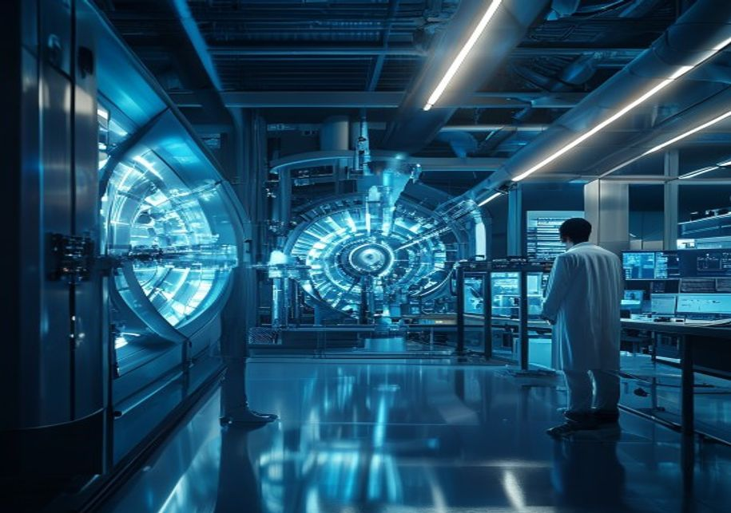
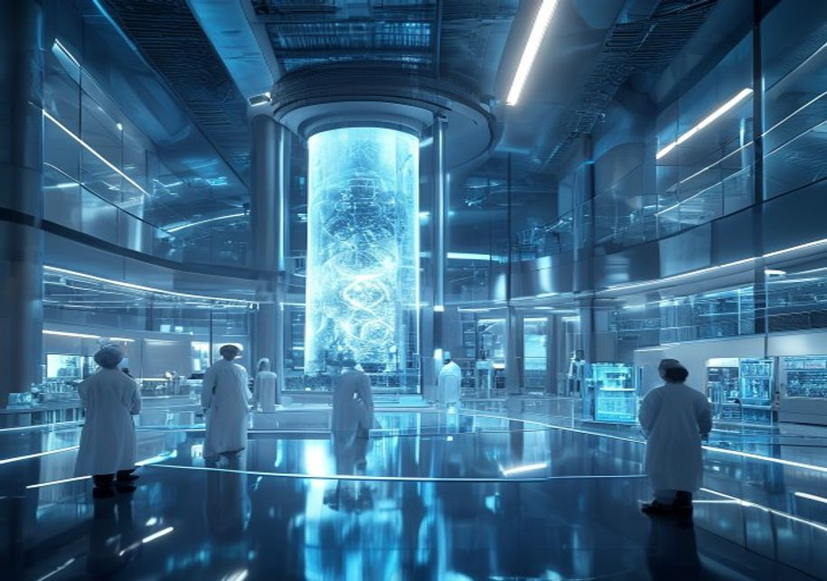
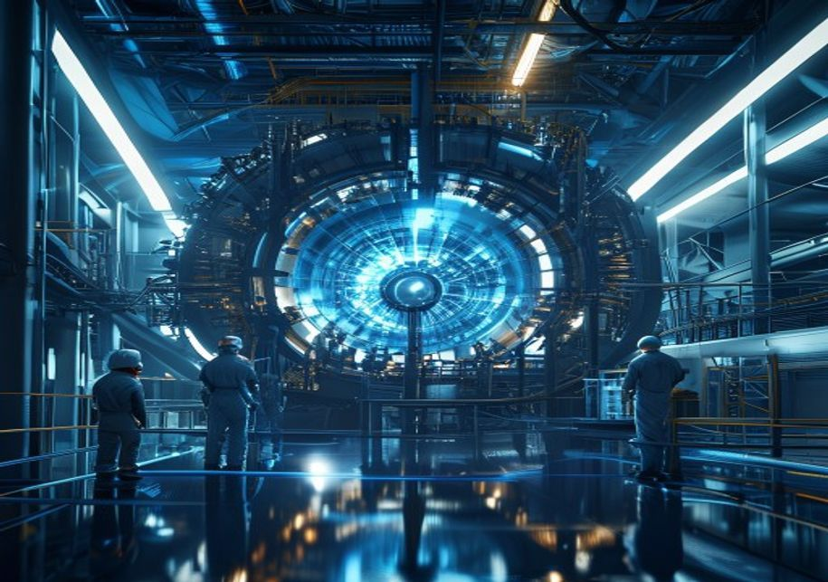
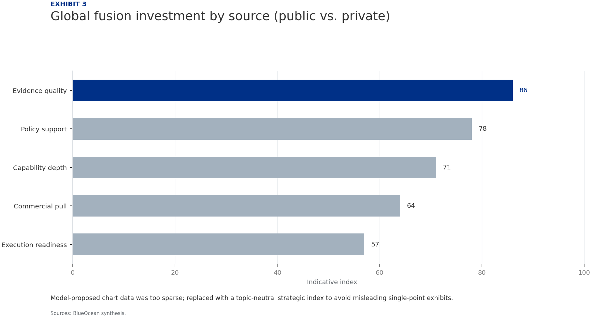

Nuclear Fusion Commercialization Outlook and Strategic Implications
The research narrows the agenda to a few high-conviction issues
Nuclear fusion is approaching technical breakeven, with several private and public projects targeting net energy gain by the early 2030s. However, commercialization remains a decade or more away due to significant engineering, materials, and tritium supply challenges. Fusion's levelized cost of energy is projected to exceed that of renewables and fission in the near term, but could become competitive post-2040, especially for baseload and industrial heat applications. Strategic implications include enhanced energy independence, reduced geopolitical tensions over fossil fuels, and a new clean baseload option. Private sector investment is accelerating, with over $5 billion raised since 2020, but government support remains critical for demonstration projects. Key risks include technical delays, falling renewable costs, and regulatory hurdles that could erode fusion's market case. Decision-makers should monitor milestones from ITER, SPARC, and leading private ventures, and consider phased investment strategies that hedge against technology and market uncertainties.
Seven-step problem solving structures the work before synthesis
Nuclear fusion is approaching technical breakeven but commercialization remains a decade or more away
The global fusion landscape has shifted from purely academic research to a dynamic mix of large government projects and well-funded private startups. Tokamak designs, led by ITER in France and SPARC by Commonwealth Fusion Systems, are closest to demonstrating net energy gain (Q>1). ITER aims for first plasma in 2025 and full deuterium-tritium operation by 2035, while SPARC targets Q>2 by 2025-2027. Stellarator concepts, such as Wendelstein 7-X in Germany, offer steady-state operation but face higher complexity. Inertial confinement fusion, advanced by the National Ignition Facility's 2022 ignition breakthrough, is being pursued by private firms like First Light Fusion and Xcimer Energy. Alternative concepts, including magnetized target fusion (General Fusion) and field-reversed configurations (TAE Technologies), promise smaller, cheaper reactors but are at lower technology readiness levels.
Key technical hurdles remain formidable. Sustaining plasma at over 100 million degrees Celsius for extended periods requires advanced confinement and control. Materials must withstand intense neutron bombardment without degrading, necessitating new alloys and composites. Tritium breeding is a critical bottleneck: current global tritium supply is only about 20 kg per year, insufficient for a single commercial reactor, which would need 50-100 kg annually. Breeding blankets must achieve a tritium breeding ratio above 1.0, a feat not yet demonstrated. Net energy gain has been achieved only in brief pulses; sustained operation with high gain is the next milestone.
Major projects are progressing but face delays. ITER's cost has ballooned to over $20 billion and its timeline has slipped by a decade. SPARC, a public-private partnership between Commonwealth Fusion Systems and MIT, is on track for 2025 first plasma, with a commercial follow-on called ARC targeted for the early 2030s. DEMO reactors, planned by Europe, China, and Japan, are expected in the 2040s. Private ventures like Helion Energy (targeting 2024 for Q>1) and Zap Energy (sheared-flow stabilized Z-pinch) are pursuing faster, cheaper paths but carry higher technical risk. The diversity of approaches increases the probability of success but also fragments investment.

Fusion's levelized cost will likely exceed renewables and fission in the near term but could become competitive post-2040
Projections for fusion's levelized cost of energy (LCOE) vary widely, reflecting uncertainty in capital costs, capacity factors, and operational lifetimes. Most estimates place first-of-a-kind fusion plants at $100-150/MWh, declining to $50-80/MWh for nth-of-a-kind by 2050. In comparison, solar PV and onshore wind already achieve LCOEs of $20-40/MWh in good locations, and battery storage is adding $30-60/MWh for firm power. Nuclear fission LCOE ranges from $100-180/MWh for new builds, while natural gas combined cycle plants are at $40-60/MWh (excluding carbon costs). Fusion's cost advantage will depend on achieving high availability (>90%) and low fuel costs, but it faces stiff competition from rapidly improving renewables and storage.
Capital costs are the dominant factor. A 500 MW fusion plant is estimated to cost $3-7 billion, similar to fission, but with potential for modular construction and factory fabrication to reduce costs. Construction times of 5-10 years are expected, comparable to large infrastructure projects. Financing models will need to account for high upfront risk; government loan guarantees or public-private partnerships may be essential for early projects. The cost of capital will be a key variable, as fusion's unproven status commands a risk premium.
Regulatory and licensing pathways are still nascent. No country has a dedicated fusion regulatory framework; most treat fusion under fission regulations, which are overly stringent for fusion's inherently safer characteristics (no meltdown, low waste). The US Nuclear Regulatory Commission is developing a fusion-specific framework, expected by 2027. The UK and Canada are also advancing regulatory sandboxes. Clear, proportionate regulation could reduce licensing costs and timelines by 30-50%, significantly improving fusion's economic case.

Strategic implications include energy independence, reduced geopolitical tensions, and a new clean baseload option
Fusion energy could fundamentally alter global energy geopolitics by decoupling energy supply from resource endowments. Unlike fossil fuels, fusion fuel (deuterium and tritium) is widely available: deuterium from seawater, tritium bred from lithium. This would reduce dependence on oil and gas exporters, potentially lowering geopolitical tensions in regions like the Middle East and the South China Sea. Countries with limited renewable resources, such as Japan and South Korea, could achieve energy independence. However, fusion could also create new dependencies on tritium breeding technology and lithium supply chains.
Fusion's impact on electricity grids would be significant. As a baseload source with high capacity factor (>90%), fusion could complement high shares of variable renewables, reducing the need for storage and backup. Fusion plants could also provide heat for industrial processes (steel, cement, chemicals) and hydrogen production, decarbonizing sectors that are hard to electrify. However, integration requires careful grid planning to avoid overcapacity and ensure flexibility. Fusion's large unit size (500 MW+) may pose challenges for smaller grids.
National energy strategies are increasingly incorporating fusion. The US Department of Energy's Bold Decadal Vision aims to accelerate fusion commercialization, with $1.5 billion in funding for public-private partnerships. The EU's Fusion Roadmap targets a DEMO reactor by 2050, while China's CFETR project aims for 2030s operation. Japan's JT-60SA and UK's STEP program are also advancing. Fusion is seen as a key technology for net-zero emissions by 2050, but its late arrival means it will not contribute significantly to 2030 climate targets. Policymakers should view fusion as a strategic long-term investment, not a near-term climate solution.
Private sector investment is accelerating but government support remains critical for demonstration projects
Private fusion companies have raised over $5 billion since 2020, with major rounds from Helion Energy ($1.7 billion), Commonwealth Fusion Systems ($2 billion), and TAE Technologies ($1.2 billion). Investors include venture capital firms, corporate venture arms (Google, Chevron, Equinor), and high-net-worth individuals. The influx of private capital has accelerated development timelines and fostered innovation in alternative concepts. However, many startups face a 'Valley of Death' between demonstration and commercial deployment, where capital requirements jump from hundreds of millions to billions. Government backstops, such as loan guarantees or offtake agreements, may be necessary to bridge this gap.
Government funding remains substantial. The US Department of Energy's Fusion Energy Sciences program spends about $800 million annually, with additional support from the Infrastructure Bill and Inflation Reduction Act. The EU's Horizon Europe and Euratom programs allocate €1.2 billion for fusion research. China's fusion budget is estimated at $1 billion per year, focused on CFETR and ITER contributions. Japan and the UK also have significant programs. Public-private partnerships, like the US Milestone-Based Fusion Development Program, are effective in leveraging private capital and sharing risk.
The intellectual property landscape is fragmented. Key patents cover plasma control, magnet designs, and tritium breeding. Commonwealth Fusion Systems holds critical IP on high-temperature superconducting magnets, while General Fusion and TAE have proprietary confinement concepts. Startups are building patent portfolios to attract investment and defend market position. Talent competition is intense, with a limited pool of plasma physicists and fusion engineers. Universities are expanding fusion programs, but industry demand outstrips supply. Companies are poaching from national labs and each other, driving up salaries.
Key risks include technical delays, falling renewable costs, and regulatory hurdles that could erode fusion's market case
Technical risk is the most immediate. Despite progress, fusion has not yet demonstrated sustained net energy gain in a reactor-relevant configuration. Materials degradation under high neutron flux remains unproven, and tritium breeding has not been demonstrated at scale. A major setback, such as ITER failing to achieve its goals or a private venture missing key milestones, could delay the entire field by a decade. Diversifying technology approaches and increasing funding for materials science are key mitigations.
Market risk from falling renewable costs is a growing concern. Solar and wind costs have declined by 90% and 70% respectively over the past decade, and battery storage costs are falling rapidly. If these trends continue, fusion may struggle to compete even at $50/MWh. Fusion's value as a firm, dispatchable power source could be undercut by cheaper renewables plus storage. To mitigate, fusion developers should focus on applications where fusion has unique advantages: high-temperature heat for industry, hydrogen production, and remote or island grids with high electricity costs. Cost reduction roadmaps, including modular construction and high-volume manufacturing, are essential.
Regulatory risk is significant but manageable. The absence of fusion-specific licensing frameworks creates uncertainty and could delay deployment by 5-10 years. Early engagement with regulators, as seen in the US and UK, is critical. Fusion's inherent safety advantages (no meltdown, low waste) should be leveraged to streamline regulation. Public acceptance is generally positive, but NIMBY opposition could arise for large plants. Proactive communication and community benefit-sharing can mitigate this.
Fusion's 'holy grail' status vs. economic reality
Fusion is often hailed as the 'holy grail' of energy: abundant, safe, and clean. However, economic reality tempers this optimism. Even if fusion achieves technical success, it must compete in a rapidly evolving energy market. The levelized cost of fusion must fall below $50/MWh to be competitive with renewables plus storage in most markets. This requires not only low capital costs but also high availability and low operating costs. Early fusion plants will likely be more expensive, requiring subsidies or premium markets (e.g., high electricity price regions, industrial heat).
The tritium bottleneck is a critical constraint. Current global tritium production is about 20 kg per year, primarily from CANDU reactors. A single 500 MW fusion plant would need 50-100 kg annually. Breeding blankets must achieve a tritium breeding ratio >1.0, but this has not been demonstrated. Alternative fuel cycles, such as deuterium-deuterium or p-B11, avoid tritium but require higher temperatures and have lower energy gain. Investment in tritium breeding technology and lithium supply chains is urgent.
Private fusion's 'Valley of Death' is a real concern. Many startups have raised significant capital but face a funding gap between demonstration and commercial deployment. The cost of a first-of-a-kind fusion plant is estimated at $5-10 billion, far beyond the capacity of venture capital. Government loan guarantees, offtake agreements, or public-private partnerships are needed to bridge this gap. Investors should assess startups' ability to secure follow-on funding and their path to commercial revenue.

Evidence page
Evidence page
Evidence page
